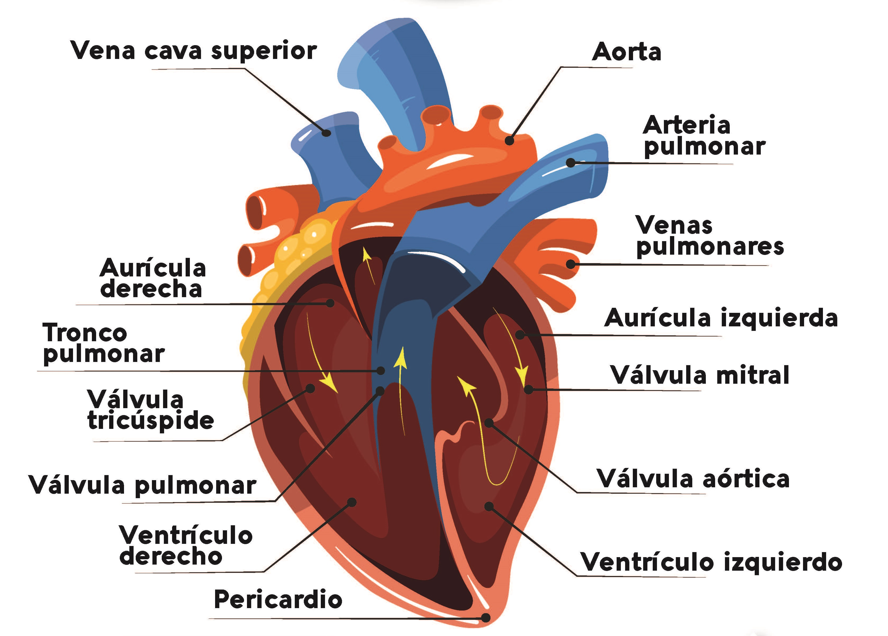

La angiología es la disciplina anatómica que estudia los órganos del sistema circulatorio y del sistema linfático. Su función principal es asegurar que cada célula del cuerpo reciba oxígeno y nutrientes, eliminando a la vez los productos de desecho.
1. El Corazón: La Bomba Central
Es un órgano muscular hueco del tamaño de un puño cerrado, situado en el mediastino medio. Actúa como una bomba doble que impulsa la sangre.
El Sistema de Conducción Eléctrica
El corazón no necesita una orden externa para latir; genera su propio impulso eléctrico gracias a células especializadas:Nodo Sinoauricular (Marcapasos natural):
Inicia el latido en la aurícula derecha.Nodo Atrioventricular:
Retrasa el impulso brevemente para permitir que los ventrículos se llenen de sangre.Fibras de Purkinje:
Distribuyen la señal rápidamente por las paredes ventriculares para una contracción potente.- Aurículas (derecha e izquierda): Cavidades superiores que reciben la sangre.
- Ventrículos (derecho e izquierdo): Cavidades inferiores que expulsan la sangre con fuerza.
- Válvulas: Aseguran que el flujo sea unidireccional (tricúspide, mitral, pulmonar y aórtica).

2. Tipos de Vasos Sanguíneos
Arterias
Llevan sangre desde el corazón a los tejidos. Tienen paredes gruesas y elásticas para soportar la presión.
Venas
Devuelven la sangre al corazón. Tienen válvulas internas para evitar el retroceso de la sangre.
Las Capas de los Vasos (Túnicas)
Tanto arterias como venas poseen tres capas concéntricas, pero con diferencias estructurales importantes:Túnica Íntima:
Capa interna de endotelio que permite un flujo suave.Túnica Media:
Capa de músculo liso y fibras elásticas. Es mucho más gruesa en las arterias para controlar la presión arterial (vasoconstricción/vasodilatación).Túnica Adventicia:
Capa externa de tejido conectivo que ancla el vaso a los tejidos circundantes.Los Capilares son los vasos más pequeños donde ocurre el intercambio real de gases y nutrientes entre la sangre y las células.

3. Los Dos Circuitos
Circulación Menor (Pulmonar): Sangre desoxigenada va del corazón a los pulmones para cargarse de O2 y regresa al corazón.
Circulación Mayor (Sistémica): Sangre oxigenada sale del corazón hacia todo el cuerpo y regresa con CO2.
El Sistema Linfático (La "Angiología Blanca")
A menudo olvidado, es parte esencial de la angiología: Linfa: Líquido transparente que drena el exceso de líquido de los tejidos. Ganglios Linfáticos: Actúan como filtros donde las células inmunitarias combaten patógenos. Conducto Torácico: El vaso linfático más grande que devuelve la linfa al sistema venoso.La Sangre como Tejido Líquido
Aunque es esplacnología y angiología a la vez, conviene mencionar que la sangre se compone de:Plasma:
Parte líquida rica en proteínas y agua.Elementos formes:
Eritrocitos (transporte de O2), Leucocitos (defensa) y Trombocitos o plaquetas (coagulación).